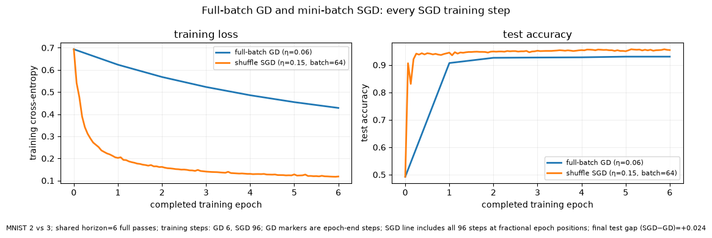
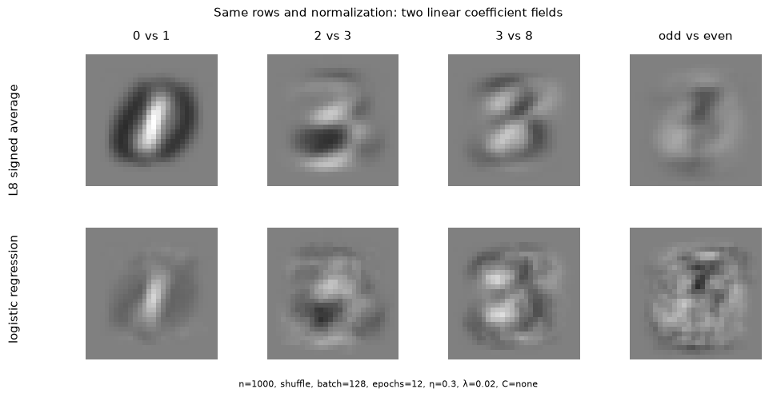
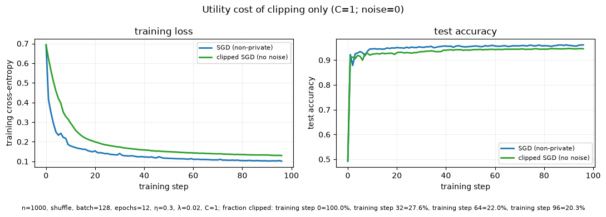
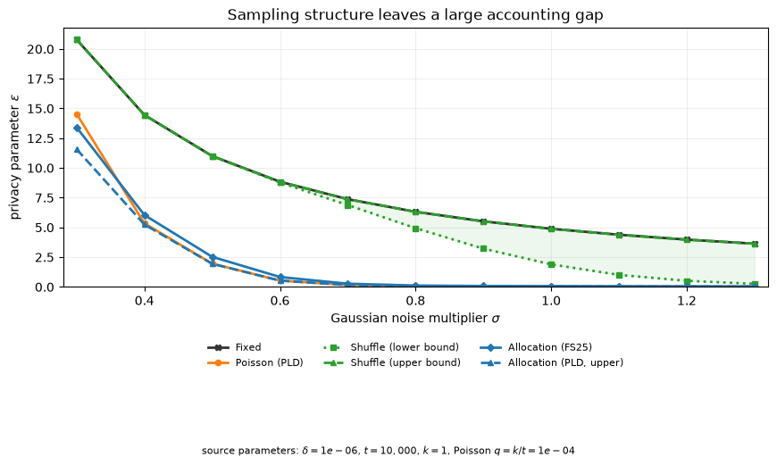
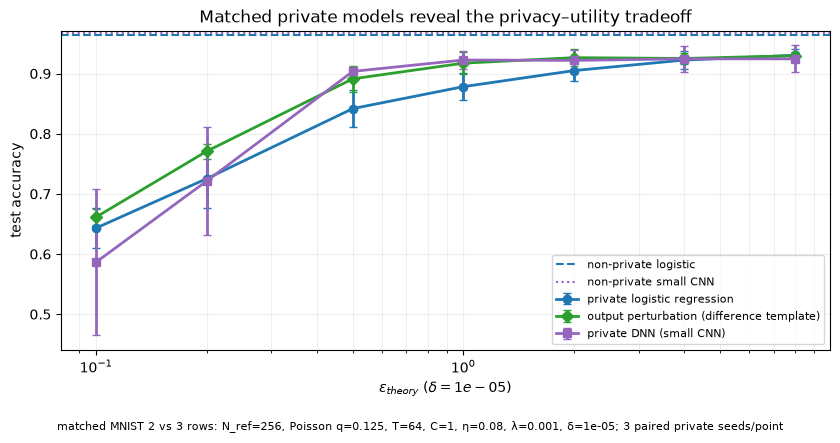
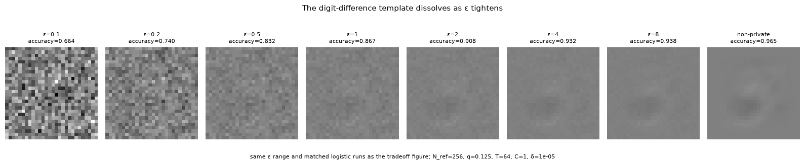
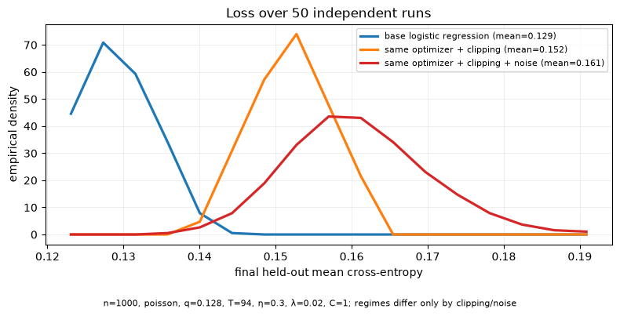
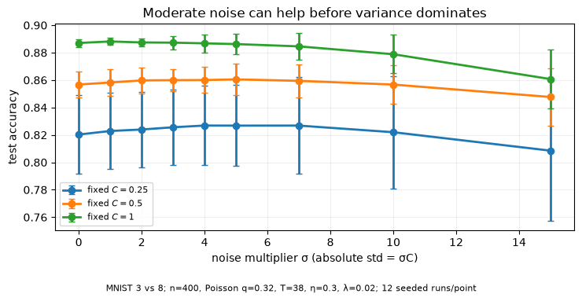

Code
logistic_1d_fig = make_logistic_regression_1d_figure(artifact)
display(logistic_1d_fig)<Figure size 820x430 with 1 Axes>Applied Data Privacy
Lecture 8 privatized one fixed linear statistic. Here the parameters change after every data-dependent update, so we privatize the optimization procedure itself. The contract is add/remove adjacency: each Poisson step includes a record with probability \(q\), clips its gradient at \(C\), adds \(N(0,(\sigma C)^2I)\) to the sum, and divides by the public \(qN_{ref}\).
A score \(wx+b\) is not yet a probability. Logistic regression maps it through \(p(y=1\mid x)=\sigma(wx+b)\), and classifies at \(p=0.5\).
logistic_1d_fig = make_logistic_regression_1d_figure(artifact)
display(logistic_1d_fig)<Figure size 820x430 with 1 Axes>Before mini-batches, use full-batch gradient descent. Its update is deterministic for this fixed data set: \(w_{t+1}=w_t-\eta_{GD}\nabla L(w_t)\). A step is one update, and the learning rate controls its size.
make_gd_step_trace_figure(artifact)
The smooth trajectory is the baseline for optimization, not evidence that the model has learned a deterministic rule. SGD next replaces this full gradient with a random mini-batch estimate.
The curve shows probability, not merely a hard class. Changing \(w\) changes its steepness; changing \(b\) moves the decision point. The visual does not claim that a one-dimensional data set is representative of image classification.
The exponential family is \[p(y\mid\theta,\phi)=\exp\{(y\theta-b(\theta))/a(\phi)+c(y,\phi)\}.\] For a GLM, \(\eta_i=w^Tx_i+b\), \(\mu_i=E[Y_i\mid x_i]\), and \(g(\mu_i)=\eta_i\). For Bernoulli data with the logit link, \(\mu_i=\sigma(\eta_i)=p_i\) and \[\ell_i(w)=-y_i\log p_i-(1-y_i)\log(1-p_i).\] In the 1D plot, \(x_i\) is the horizontal position, \(w,b\) determine \(\eta_i\), and the curve is \(p_i\). Lecture 8 shared linear geometry but was not fit as this Bernoulli GLM.
For empirical risk \(L(w)=n^{-1}\sum_i\ell_i(w)\), full-batch GD is \(w_{t+1}=w_t-\eta\nabla L(w_t)\). Mini-batch SGD is \[w_{t+1}=w_t-\eta |B_t|^{-1}\sum_{i\in B_t}\nabla\ell_i(w_t).\] A step is one update; a batch is the rows in that update; an epoch is a pass-worth of updates; \(\eta\) is the learning rate. SGD is random because its batch is random.
make_gd_vs_sgd_step_trace_figure(artifact)
This frozen public comparison uses the overlapping 2-vs-3 task: GD uses \(\eta_{GD}=0.06\); shuffle SGD uses batch size 64 and \(\eta_{SGD}=0.15\); both make six complete passes through the same rows. A training step is one optimizer update. Thus GD makes one training step per epoch, while SGD makes one per mini-batch. The SGD curve retains every mini-batch training step; its horizontal position is fractional completed epochs, while GD’s six points are its epoch-end steps. The total step counts are printed below, and the modest final SGD advantage is a selected course example—not a claim that SGD always wins.
For an image \(x\), the Lecture-8 signed-average and fitted logistic coefficient images are both reshaped to \(28\times28\) and its dot product with \(x\) is the score. Mid-gray is zero; opposite tones are opposite signed evidence. Each task below uses the same preprocessing and fitting procedure.
make_linear_vs_logistic_classifier_weights_figure(artifact)
These are fitted coefficients, not difference-template images or an accuracy leaderboard. They show which pixels change the score; they do not by themselves show whether a particular individual changes the trained model.
With \(\tilde x_i\) including the intercept, logistic loss has per-example gradient \[g_i(w_t)=(p_i-y_i)\tilde x_i.\] The batch sum \(\sum_{i\in B_t}g_i(w_t)\) is additive over records once we condition on the current \(w_t\). Later gradients can depend on earlier private outputs, so adaptive composition accounts for the whole sequence. MNIST preprocessing gives a public domain bound; DP-SGD additionally enforces the clipping bound \(C\).
DP-SGD first clips every per-example gradient. The diagnostic below evaluates unclipped norms on the same training rows after named training-step checkpoints of shuffle SGD. One training step means one mini-batch optimizer update; it is not an epoch. The plot caption states the sample size, batch size, epoch budget, learning rate, regularization, and clipping radius.
make_gradient_norms_by_training_step_figure(artifact)
The vertical line is the enforced bound \(C\), not a claim that ordinary gradients were already bounded. Clipping controls one record’s contribution at every step, but it can change the optimization path.
Here ordinary SGD and clipped SGD share initialization, shuffled batches, learning rate, and number of updates; noise is exactly zero.
make_sgd_vs_clipped_sgd_step_trace_figure(artifact)
Any separation is clipping bias in the actual trace. It is not a privacy result, because clipping alone does not hide the bounded sum.
Now use the Poisson mechanism: fixed \(q\), \(T\), \(C\), and \(N_{ref}\); only the Gaussian noise differs. The private line summarizes paired seeded runs rather than a lucky trajectory.
make_clipped_vs_noisy_sgd_step_trace_figure(artifact, epsilon=training_run_epsilon_theory(artifact))
Noise adds variation and can slow utility. These traces diagnose that cost; they do not estimate an attack success rate or replace an accountant.
For each step, independently include each real row with probability \(q\); compute \(g_i\); set \(\bar g_i=g_i\min(1,C/\lVert g_i\rVert)\); release \[\tilde g_t={\sum_{i\in B_t}\bar g_i+N(0,(\sigma C)^2I)\over qN_{ref}},\qquad w_{t+1}=w_t-\eta(\tilde g_t+\lambda w_t).\] The public regularizer \(\lambda w_t\) is outside clipping and noise. An empty batch still makes the noise-only update. Under this schedule \(T=\lceil\mathrm{epochs}/q\rceil\); expected selections per row are \(qT\).
The scalar add/remove witness compares record absent \(N(0,\sigma^2)\) to record present \((1-q)N(0,\sigma^2)+qN(1,\sigma^2)\). Its attack ROC has TPR versus FPR, so higher means a stronger attacker; it is not itself the complete DP-SGD ROC.
# The interactive below is the single ROC artifact for this beat.PoissonInclusionGaussianROCVisualizer(q=0.32, sigma=2.0).embed()As \(q\) tends to zero the laws coincide and the ROC approaches the diagonal; at \(q=1\) it is the unsampled Gaussian witness. The \(q\) control in the post export uses the same fixed \(\sigma\).
Define \(\delta_M(\varepsilon)=\max\{D_{e^\varepsilon}(P\Vert Q),D_{e^\varepsilon}(Q\Vert P)\}\). The linked inverse is \(\varepsilon_M(\delta)\). The numerical envelope intersects valid ROC constraints pointwise in TPR space.
# The δ-controlled interactive below is the single privacy-profile artifact for this beat.# delta is baked as a literal: the site build discovers .embed() by static AST parsing
# and only exports literal kwargs. Re-bake if DEFAULT_DELTA moves.
PoissonInclusionGaussianPrivacyProfileVisualizer(q=0.32, sigma=2.0, delta=1e-5).embed()\(\varepsilon_{theory}\) is an accountant upper guarantee, not the empirical \(\hat\varepsilon_{audit}\) lower bound used next lecture. The profile is numerical and its binding add/remove direction must be reported; it is not an empirical attack measurement.
For \(O\sim P\), \(L(O)=\log(p(O)/q(O))\) is the privacy-loss random variable. Likelihood-ratio thresholds generate the Neyman–Pearson ROC. At threshold \(\varepsilon\), the privacy profile is the difference between the two tail bounds: \(\delta(\varepsilon)=P[L>\varepsilon]-e^{\varepsilon}Q[L>\varepsilon]=E_P[(1-e^{\varepsilon-L})_+]\).
make_privacy_loss_distribution_figure(privacy_loss_distribution_data(q=artifact["q"], sigma=2.0))
The left panel is the one-step PLD, a distribution on the real-valued privacy-loss axis (shown in a finite numerical display window). The right panel is the privacy profile \(\delta_M(\varepsilon)\) induced by that PLD. The visibly shaded hockey-stick contribution identifies the positive part of \(\delta(\varepsilon)\).
Privacy losses add under composition, so PLDs convolve: \(L_{1:T}=\sum_{t=1}^T L_t\). Each conditional step has the same guarantee even when parameters depend on earlier private outputs, which is why adaptive composition applies.
make_pld_composition_figure(pld_composition_data(q=artifact["q"], sigma=2.0, delta=artifact["delta"]))
The composition ladder is a teaching witness. This panel instead uses the resolved \((q,\sigma,T,N_{ref},\delta)\) of the model we trained. It shows the full privacy profile rather than privileging an unexplained \((\varepsilon,\delta)\) point.
make_training_pld_profile_figure(training_pld_profile_data(artifact))
The same PLD accountant also makes the training-length cost explicit. This is a theoretical upper guarantee, not a measured attack success rate.
The composition ladder deliberately contains no \(\varepsilon\) values: it shows only how mass spreads under convolution. The next two panels return to the resolved \((q,\sigma,T,N_{ref},\delta)\) training run and then summarize its accountant cost. This is an accountant guarantee, not a Monte-Carlo attack estimate.
Poisson sampling includes each record independently at each step. Fixed-size sampling chooses a constrained batch independently at each step. Random allocation assigns each record to a prescribed subset of steps; shuffle assigns it within dependent permutations. The two axes below separate dependence among records from dependence of a record across steps; each mini-matrix uses elements (records) vertically and steps horizontally.
sampling_grid_data = compute_sampling_dependence_grid(
rng=np.random.default_rng(SEEDS["sampling_dependence"]),
)
make_sampling_dependence_grid_figure(sampling_grid_data)
The source comparison fixes a unit-sensitivity Gaussian mechanism, \(\delta=10^{-6}\), \(t=10^4\), \(k=1\), and Poisson rate \(q=k/t=10^{-4}\). Each line below is computed from the original numerical artifact on the same \(\sigma\) grid; the earlier screenshot is not the data source.
sampling_privacy_gap_figure(sampling_gap_artifact)
The shuffle lower and upper bounds leave a wide unresolved interval, so the upper bound can look dramatically worse than Poisson PLD accounting without telling us the exact shuffled privacy cost. Random allocation keeps controlled participation—each record is assigned to exactly \(k\) steps—while its FS25 and PLD upper bounds approach the Poisson curve here. It is therefore a practical bridge, not a solution to exact shuffle accounting. Sources: Feldman–Shenfeld, Privacy amplification by random allocation (NeurIPS 2025), and Efficient privacy loss accounting for subsampling and random allocation, arXiv:2602.17284v2.
The matched comparison now spans \(\varepsilon=0.1\) to \(8\), wide enough to expose a real utility transition. The logistic regression, small DNN, and output-perturbation baseline use the same 2-vs-3 rows and public privacy/training contract. At intermediate budgets (\(\varepsilon=0.5\) through \(4\) in these measured runs), the private DNN is more accurate than private logistic regression. The following coefficient strip uses the same ε range, reports each model’s test accuracy, and leaves the non-private reference at the right-hand endpoint.
make_accuracy_privacy_tradeoff_figure(artifact)
make_weight_image_vs_epsilon_figure(artifact)
A single trajectory can be lucky. These distributions use independent seeded runs of the same Poisson optimizer: ordinary gradients, clipping with zero noise, and clipping plus Gaussian noise. Each observation is a final test mean cross-entropy.
make_loss_distribution_stages_figure(artifact)
The spread describes this configured experiment, not all possible data sets. Clipping and noise are the only private interventions; the plots do not establish a privacy guarantee by utility alone.
The next sweeps use a fixed public MNIST 3-vs-8 calibration task. Each C-sweep line fixes a different \(\sigma\); each σ-sweep line fixes a different \(C\). All other optimizer and sampling parameters stay fixed. Changing \(C\) changes both clipping bias and the absolute noise standard deviation \(\sigma C\). In the noise sweep, moderate noise improves this finite training/generalization result under strong clipping before larger noise dominates, so the measured curve is not monotone.
make_accuracy_vs_clipping_figure(artifact)
make_accuracy_vs_noise_figure(artifact)
These measured points are aids for choosing a public training configuration. They are not tuned after looking at individual private records, and changing σ also changes \(\varepsilon_{theory}\).
\(\varepsilon_{theory}\) is an accountant upper guarantee. The empirical utility distributions and calibration curves explain what accuracy this configured mechanism achieves, but they do not test the strongest possible attacker. The next lecture audits concrete attacks and reports a distinct empirical lower bound \(\widehat\varepsilon_{audit}\).